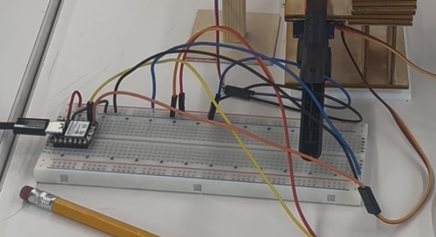

This week's challenge was to design and build a drawing machine. Our group chose to create a laser drawing machine based loosely on prior examples of similar machines. The device uses two mirrors controlled by servos to reflect a laser pointer and draw on a surface.
The main goals were to build a functional drawing machine using galvo-style mechanics, use a laser pointer as the end-effector, and make sure the machine could consistently return to the same "home" position each time it was powered on. We also set out to show that it could draw a clean circle and accurately mark the center point.
To build the machine, we used two micro servos controlled by an ESP 32 microcontroller.
For the drawing element, we attached a red laser diode module.
The beam was redirected by two front-surface mirrors, which we cut to size using the laser cutter.
Then we mounted them using our custom designed 3D-printed mirror holders.
All electronics were wired onto a breadboard and connected with jumper wires.
The mechanical assembly started with 3D printing custom mounts to hold the mirrors, which we then attached to the servo horns. We designed a simple wooden structure to serve as the backbone of the build, providing a sturdy and clean framework to mount all the components. The laser pointer was fixed to the base and aimed at the first mirror, with the second mirror handling the final redirection onto the drawing surface. We carefully aligned both mirrors to minimize angular distortion and ensure the laser beam reflected smoothly across both axes. For wiring, we connected each servo to the appropriate pins on the ESP32 and used an external power supply to avoid overloading the board.
For the programming side, we started with a basic example sketch and then added our own tweaks to scale the laser movement to fit the dimensions and motion range of our machine. The core of the code takes in X and Y coordinate values and uses trigonometry to convert them into servo angles, giving us accurate control of where the laser points. One important part of the setup was calibration — we built in a homing routine that reset both servos to fixed angles every time the system was powered on. That made sure the laser always started from the same spot. We also added physical stops to help reinforce that consistency.
We took it a step further by creating a custom website that connects to the ESP32 via WebSockets, letting us control the machine in real time. On the site, we added a slider that dynamically modifies the laser's motion by adjusting the phase shift in a Lissajous curve. A perfect circle is generated when A=B, omega_x = omega_y, delta_y=0, and delta_x=pi/2. When the slider is moved away from zero, it causes delta-x to increase slightly with each loop of the sine wave, which makes the figure slowly rotate. The farther the slider is moved, the faster delta-x increases — and the quicker the shape spins, creating a mesmerizing, interactive light show.
Rather than using a pen or stylus, we opted for a laser pointer as the end-effector. This made the output more visually striking.
Aligning the mirrors proved to be one of the most difficult tasks, as even slight misalignments introduced noticeable distortions. We also experienced jitter with the servos, which slightly degraded the precision of the drawings.
We tested how well the machine could draw a circle by programming it to move in a circle and then marking where the center should be. After it finished, we checked how far off it was from the actual center and found it was only off by about 3.8%, which felt pretty solid for something this simple. We also tested whether it could reliably return to the same position after being turned off and on again, and it consistently came back within about 2 degrees of where it started — not perfect, but definitely close enough for our purposes.
This project gave us a great hands-on look at mechanical design, angular motion, and calibration. Using light instead of a pen or pencil was super cool and different from what most of the other groups were working on — and honestly, who doesn't love a light show?
If we had more time to keep working on it, we'd love to swap out the servos for stepper motors to get smoother, more accurate motion. That extra precision could open up a lot of possibilities for more complex shapes and cleaner lines. We also thought it'd be awesome to build a better interface for drawing — something more interactive that would make it easier to design and run shapes, especially with the improved control that steppers would give us.
← Back to Home